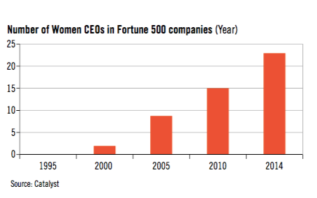

介绍
如果国际头条新闻标题为“经济和社会危机逼近：27亿就业人口将受到影响”，或“保护世界50%人口的人权、劳动权利的压力与日俱增”，人们会希望这类新闻引起政府注意并重点关注相关问题。伴随着这些问题的解决，人们同样希望解决另一关键问题——克服工作领域中对妇女的歧视，并利用她们巨大的潜力。由于全世界各年龄段和不同地区普遍存在性别不平等现象，因此这一问题的严重性以及妇女为可持续发展所作的贡献需要被大众了解。
随着2015年国际妇女节的到来，性别平等和妇女经济赋权作为一个基本人权问题和全球进步的关键驱动力需要被重新关注。在世界上的大部分地区，妇女往往被集中在价值被低估、薪水低、工作条件差的工作中。她们缺乏接受教育、职业培训、招聘和获得同等报酬的机会，并且在工作谈判和决策中的权利受限。妇女获得生产资源的机会不平等，而且在非正式工作和非标准就业形式中的比例过高。他们承担着不成正比的无偿护理工作，许多人在家里和工作中都面临着暴力的危险。
这些问题都不是近年才出现的。早在1995年在北京召开的第四次世界妇女大会上，国际劳工组织就强调了这些问题，并提出了一个大胆的议程以促进性别平等和妇女赋权。国际劳工组织在帮助其成员解决就业创业发展、社会和劳动保护、社会对话和获得权利方面的性别差距，结束职业隔离、为妇女在不同行业和服务领域取得卓越成就开辟道路等方面发挥着关键作用。在追求体面工作的同时照顾家庭成员，履行对企业、社区和社会的义务，应该是男女都可以实现的目标。
劳动力市场上的女性越来越多，但自1995年之后的性别差距仍然很大，正式承诺促进性别平等以消除歧视和确保同工同酬的成员国数量取得了重大的进步。1995年，126个成员国批准了《同酬公约》（1951年，第100号文件），以及122个成员国批准了《1958年消除（就业和职业）歧视公约》（1958年，第111号文件）。现在的编码分别是171和172。这一承诺如何转化为切实有益于妇女的成果？从全球来看，从1995年开始男女劳动参与率的差距一直在非常缓慢地缩小。目前女性劳动力参与率为50%，而男性为77%。而在 1995年这些数字分别为52%和80%。虽然这一差距已经缩小了百分之一（从28%降至27%），但男女工作的比例比1995年要小，很大一部分是受2008年全球范围的金融危机影响。在澳大利亚布里斯班举行的G20会议上，参与国政府同意了“到2025年前将本国男女参与率差距缩小至25%的目标……并将1亿多妇女纳入劳动力市场”。
工作质量仍然令人担忧
《北京行动纲领》指出妇女主要从事工资低、工作条件差的工作，往往没有生育保险，尽管近年有了一些改善但大体情况仍然如此。1995年58%的女性和53%的男性被归类为“弱势就业”。 这两个数字现在都有所改善—分别为46%和44%，但对女性来说这一数字只在统计学上更为显著。妇女在低工资工作中就业的比例过高似乎是劳动力市场的普遍特征。低工资就业的性别分工本身就是造成性别工资差距的一个重要原因。低工资就业的性别分工也与女性为主的职业易受低工资风险的影响有关。在全球范围内，女性的收入约占男性收入的77%，高收入女性的这一差距还在扩大。国际劳工组织没有指出的是，按照目前的速度，如果不采取针对性的行动，在2086年之前不可能实现男女薪酬平等。
妇女在决策和领导方面的积极势头
国际劳工组织成员中有一些积极势头。现在国际劳工组织8%的成员国由女性政府首脑领导，高于1995年的3%。自1995年以来，国会女议员的比例翻了一番，但在全世界只有22%的女性国会议员。地区之间的差异也很大，在38个国际劳工组织成员国中，女议员所占比例不到10%，而在某一时期议会中有（或曾经有过）大多数的女性，其中卢旺达女议员占63%。
类似的趋势在工人组织和雇主组织中也很明显。在2014年国际劳工大会的代表中，19%的工人代表和23%的雇主代表是女性，好于2001年9%的工人代表和8%的雇主代表是女性（2001年为国际劳工组织开始监测这一统计数据的第一年）。国际工会联合会（ITUC）“把我们算进去”运动的目标是，到2018年，80%的会员单位和30%的女性在其决策机构中任职，2010年ITUC选举了一名妇女担任秘书长。国际雇主组织（IOE）与国际商业妇女联合会合作，鼓励整个商业界的工作场所多样性、性别平等和妇女赋权。
女性在商业和管理方面的障碍依然存在
虽然取得了进展，但2015年国际劳工组织《女性在商业和管理中：获得动力》的报告显示，在公司高层仍然缺乏女性。公司或组织越大，由女性领导的可能性就越小。现在女性拥有和管理着30%以上的企业，但往往集中在微型企业和小型企业。女性占全球董事会席位的19%，全球最大企业的CEO中女性只占5%或更少比例。

来源：ILO官网
原文链接：
https://www.ilo.org/gender/Informationresources/Publications/WCMS_348087/lang--en/index.htm
翻译：村长
校对：白纸
图片来源于网络，侵权删除。